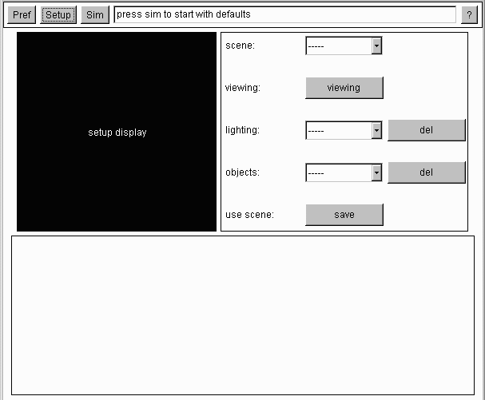

Setup
The 'setup panel' allows the user to modify the data used as input for the algorithm.
There are 3 components embeded within the setup panel.
 The 'setup display' is used to display the current scene as a 3d wireframe.
When the user creates or modifies a scene, these changes will be reflected
visually in this canvas.
The 'setup button panel' is used to control the addition and removal of
the algorithm's data. Selecting objects from this panel will allow that
object's properties to be edited, by bringing up another panel, specific
to that object. Changes can be sent to the algorithm by pressing the save button.
The lower panel, or 'setup elements panel', is initially empty. It is used as a container, holding
smaller panels allowing the user to edit object properties. When an object
is selected from the setup button panel, panels specific to customizing that
object are temporarily added to this panel. Scrollbars, textboxes, and canvases are used
to display values of the properties adjusted.
The raytracer allows point light sources, spheres, boxes, and triangles to be
added, modified, and removed. The user can also select a default scene.
If the user were to select or create a light source from the setup button
panel, there would be two apparent effects. A panel would be displayed in
the elements panel, allowing the coordinates and brightness to be modified
through scrollbars. The second effect is the wireframe will display a 3d image,
updated from the scrollbars. The setup panel allows other properties to be
modified as well. The geometry of spheres, boxes, and triangles can be
adjusted through scrollbars. The ambient, diffuse, and specular reflection coefficents
can be set, along with the specular exponent, transparency, and reflectivity
of each object. The viewpoint can also be controlled. Once the scene is
created and the save button pressed, the data is sent to the algorithm.
Switching to the sim panel, the user can render the scene and record
vectors, using the data input.